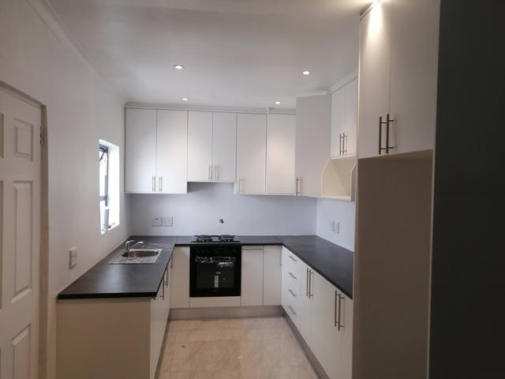

Renovation & woodworks in Pinelands
Pinelands was planned as a garden city, with 1940s–60s family homes on generous plots, big gardens and plenty of pools. Many original kitchens and built-ins are now due for replacement. We're often asked for replacing original kitchens with modern layouts, built-in cupboards for bedrooms and studies, and pool decks and garden decking.
- ~3 km from Maitland
- ~10 min drive
- 24/7 quotes
- Fixed price
Examples of our work
A selection from our projects across Cape Town. We're adding more Pinelands projects soon.



Carpentry & renovation services in Pinelands
Kitchen renovations in Pinelands
New kitchens and kitchen refits in Pinelands: cabinets, islands, sculleries and worktops, designed around how you cook.
Built-in cupboards in Pinelands
Built-in cupboards and wardrobes for Pinelands homes, from single alcoves to full walls with sliding doors.
Doors, garage doors & gates in Pinelands
Front doors, stable doors, security doors, aluminium and glass garage doors, and gates.
Woodwork & custom furniture in Pinelands
Beds, drawers, counters, tables and commercial furniture, made in our Maitland workshop.
Pool decks & outdoor timber in Pinelands
Hardwood decks, pool decks and hot-tub surrounds built for sun, water and salt air.
Fixed-price quotes, 24/7 in Pinelands
Send your request day or night. Once you accept the written quote, the price doesn't change.
Questions from Pinelands
Do you work in Pinelands?
Yes. Our workshop is in Maitland, about 3 km from Pinelands (roughly 10 minutes' drive), so we can come out to measure and quote quickly.
How much does a renovation or carpentry job in Pinelands cost?
Every job is priced for your space, materials and finishes. After a free site visit you get a written, itemised quote, and once you accept it the price is fixed: we never come back to ask for more.
How do I get a quote in Pinelands?
WhatsApp us photos and rough measurements, any time, 24/7. We'll reply with next steps and arrange a free site visit.
Can you replace an original kitchen in a Pinelands home?
Yes. We take out the old units, check the walls and plumbing points, and build and fit the new kitchen, with a fixed price agreed before we start.
Not sure what you need? Ask Charles.
Send a photo of your space and Charles Zeka, with 15+ years in carpentry and renovation, will give you his honest recommendation.
Ask Charles on WhatsAppAlso near Pinelands
Examples of recent work areas. We work anywhere in South Africa. All areas →